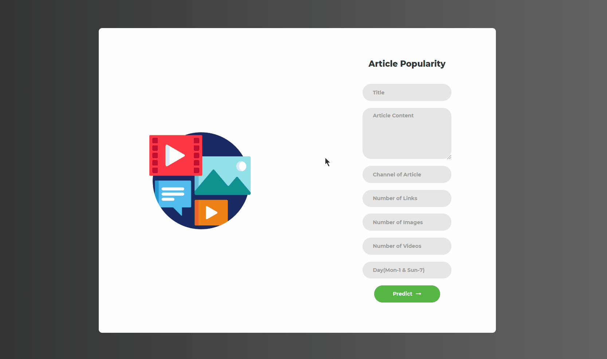
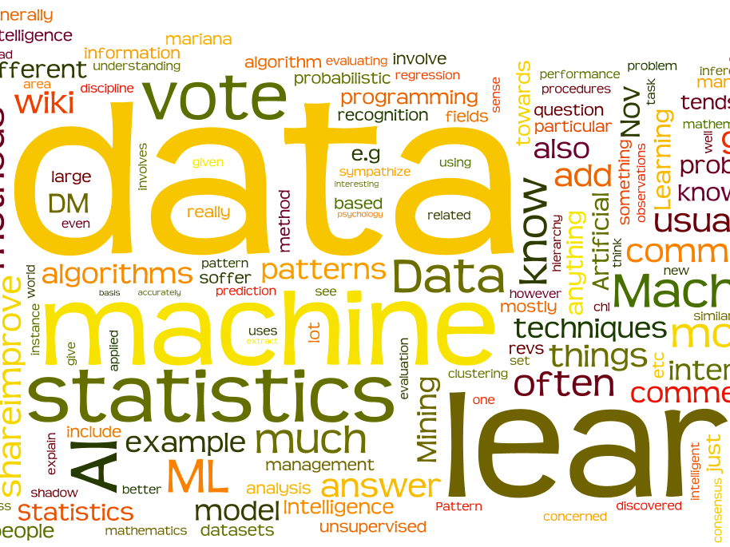

Business and Data Analyst with 2.6 years of experience in analysis and testing of business requirements. Identifies business needs and develops valuable solutions to improve accuracy and process optimization. Highly analytical and detailed with a documented track record in full software development life cycle completion using SQL, Python, Advanced Excel and Pivots, and Microsoft Power BI with large scale datasets.
About Me
Latest Projects
Online News Popularity Prediction

Latest
As the news on the internet is having a different way of judging so finding out which news should be published and which not is a challenging task in this project, we have been treating many aspects that are involved in making news popular on the internet such as article title, images in the article, the content of an article, length of content, videos in an article and many others by analysing this important features we have made an online news/article popularity prediction web-application which can be easily used by the users to check whether the news will be popular among their readers or not. By clicking the link below have a look on the work.
Convert Black & White Images to Color using Deep Learning

Latest
Everyone loves to remember their old memories and happy moments so here is one helpful tool using deep learning to bring the old images back to life. Image colorization is the process of taking an input grayscale (black and white) image and then producing an output colorized image that represents the semantic colors.

Statistics in Machine Learning
Machine Learning is an algorithm that can learn from data without relying on rules-based programming. Statistical modelling is a formalization of relationships between variables in the data in the form of mathematical equations Both machine learning and statistics have the same objective so in this Kaggle kernel, also done the statistical partly that comes in the picture while solving a machine learning problem with useful methods to deal with the data and get the most from it.
Other Projects
AIVA (AI Based Voice Assistant)
AIVA is a Virtual Assistant powered by Artificial Intelligence. It is able to search the Internet as if the user gives any query to AIVA it automatically goes to the Internet and get the best fit result for the user’s query by saying search in the starting of the query. AIVA can post comments on the social media websites such as Facebook, Twitter, etc. By just a few simple commands. User can get the talkback responsive solution for the respective query. It can open and launch web-applications and the local storage of the user computer. AIVA is the user-friendly AI assistant to make the communication easier between the user and the machine. For a detailed view click the link below.
OnDoc (Online Doctor)

OnDoc is an online doctor that chats with the user for getting the disease name by the symptoms that are faced by the user and prescribe the drug according to the symptoms without any doctor's help. It saves the user's time and money that is spent on visiting a doctor physically. Ondoc gives the drug with 85 percent accuracy and user can also verify it with the doctor while getting the medicines. For a detailed view on the project please click the link below.
Work Experience
AI and Data Analyst - Deloitte (2021)
• Argus Safety Upgrade and Converge HEALTH Safety Upgrade
o Worked on MS SQL database of various tables for data extracts and to obtain data with the Argus UI. o Understood Client’s business requirements to develop SQL Queries, identify data issues and propose required changes to improve reporting.
o Analyzed unstructured data to perform root cause analysis of issues highlighted by client and leveraged the same to draw relevant actionable insights.
o Served as the POC for all SQL support queries.
o Power BI dashboard creation and maintenance for tracking project progress and issues reported by other teams for business development.
o Identification and documentation of detailed business rules and use cases based on requirements analysis and to manage targets.
o Took end to end ownership of delivering high quality reports for a leading pharmaceutical firm which required drafting, reviewing scripts and deviations, conducting dry runs, formally executing OQ/PQ scripts, and presenting the observation/ insights to clients.
o Reviewed various validation deliverables like configuration specification (CS), requirement traceability matrix (RTM), functional and user requirements (FS/URS) etc.
o Guided interns through various internal processes with technical training and provided support for individual development.
Data Scientist Intern - CoRover.ai (2020)
o Implementing Machine Learning Model for ham and spam data classification.
o Implementing NLP techniques for dividing user’s queries in sub-domains and getting desired solution.
o Named Entity Recognition and Classification (NERC).
• KSRTC Ask Vaani and CoRover Ask iRA Bot
o Creating Machine Learning Model for classifying queries into useful and nonuse full data clustering.
o Debugging the issues faced by the model when queries are passed of similar intents and entities.
o Creating rive script for named entity matching that chatbot use to reply queries.
o Performed advanced data extraction and data manipulation from ERP systems.
o Implementing NLP techniques for dividing user's queries into sub-domains and getting the desired solution.
o Applied appropriate data science techniques for resolving and debugging business problems/ issues.
o Team player with a positive attitude and strong professional work ethic.
o Handling database for answering the question and creating specific intent classification matching.
Website Developer Intern - SAIL Refractory Unit (2018)
Designing the LDM module including the layout and database management.
o Creation of LDM module in the SAIL Official Website.
o Gathering the employee's details and their spending for the current month.
UI Designer Intern - Lemures Technologies (2017)
Development of E-commerce website.
o Designing the interface of an E-commerce website.